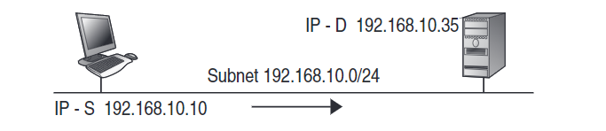
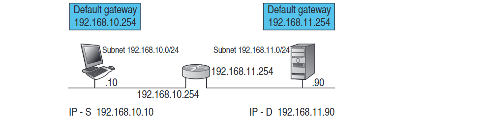

Forwarding
Una classificazione degli host può anche essere
fatta in base al meccanismo di consegna di un pacchetto
introducendo i concetti di destinazione diretta e indiretta,
legati alla logica di routing.
Host Diretto
è una stazione collegata direttamente al segmento di rete dell’host d’origine.
Host Indiretto
è un host di destinazione situato su una rete diversa da quella dell’host di origine.
Forwarding Diretto
quando la trasmissione
di un IP datagram avviene tra due host connessi su una rete
con lo stesso Net-ID e quindi non vengono coinvolti i router

Forwarding Indiretto
invece nel forwarding indiretto i datagram passano da un
router all’altro finché non ne raggiungono uno che può
trasmetterli direttamente al destinatario.

Hop
Hop(“salto”) è il termine usato nel routing
per indicare un router o altro dispositivo
di rete “attraversato” dai pacchetti trasmessi
lungo la rotta verso un host di destina-zione:
“distanza 10 hop” significa che tra mittente e
destinatario 10 dispositivi hanno ritrasmesso
il pacchetto
 Indietro
Indietro